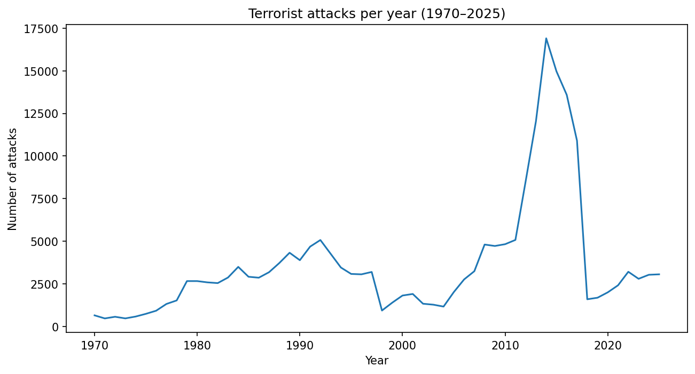
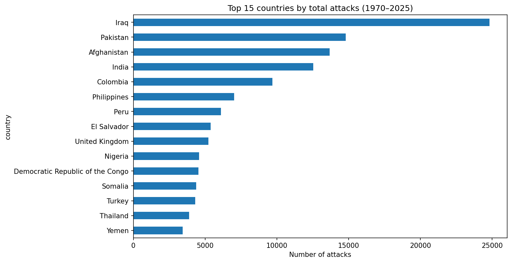
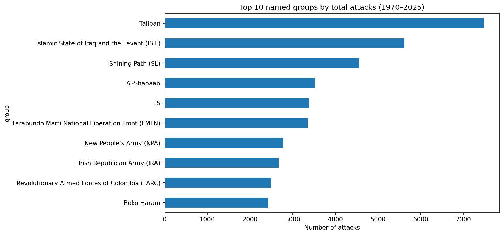

This project explores over five decades of recorded terrorism incidents worldwide, combining two independent research datasets to build a continuous historical picture from 1970 through 2025. The goal is to identify how attack frequency has changed over time, which countries and groups have been most active, and to make that data explorable through an interactive world map.
Two datasets were combined to cover this timespan:
Important caveat: these two datasets use different definitions. GTD counts a broad range of incidents classified as terrorism, while the UCDP filter used here captures only deliberate attacks on civilians. This means the two eras in this dataset are not perfectly comparable in raw magnitude — a methodology change, not a real-world drop in violence, likely explains any sharp shift around 2018 in the charts below. Country names were also manually standardized across both sources (e.g. historical names like "Zaire" and "Burma" were mapped to their modern equivalents) to allow accurate merging.

Global attack frequency shows a long-term upward trend across the dataset, with a sharp, artificial-looking dip around 1993 — a known gap in GTD's original data collection for that year rather than an actual lull in violence. Attacks climb substantially after 2011, coinciding with the rise of ISIL and escalating conflicts in the Middle East and parts of Africa.

A small number of countries account for a disproportionate share of recorded attacks, concentrated heavily in long-running conflict zones such as Afghanistan, Iraq, Pakistan, Colombia, and Peru. This concentration reflects sustained insurgent and militant activity in these regions across multiple decades, rather than isolated spikes.

Among named groups, the Taliban and Islamic State of Iraq and the Levant (ISIL) rank highest by total attack count, followed by groups including Shining Path, FMLN, Al-Shabaab, and the Irish Republican Army — reflecting both the intensity of specific ongoing conflicts and decades-long historical insurgencies.
The map below lets you explore country-level data directly. Countries are shaded by total recorded attacks — hover to highlight a country, and click any country for a full breakdown, including its most active groups, its single deadliest group by lives lost, and its peak years of activity.